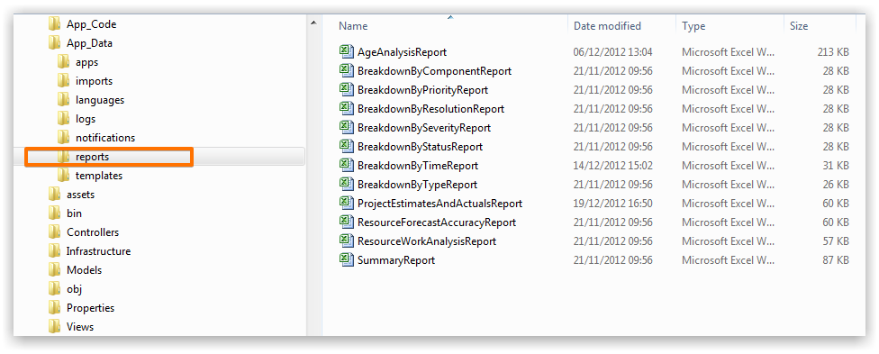

Managing Custom Reports
You can develop your own custom reports using Excel and execute them from the Grid. In order to locate your reports they must be placed in the reports folder on the web server, which resides under App_Data. Because the directory of reports is loaded when the application starts if you create a new report you will need to execute an IISRESET or recycle the Application Pool in order to force the application to reload the list.
